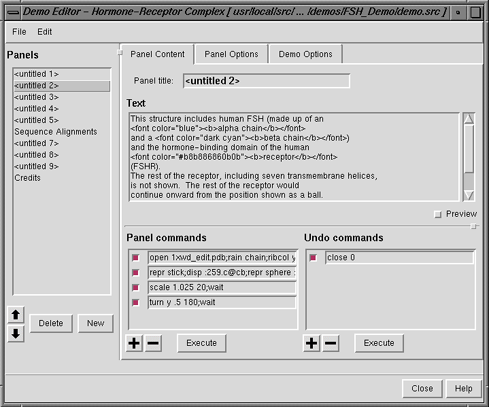

A demo is a presentation within Chimera.
A demo can include several panels, where
a panel generally consists of:
- a set of operations performed in Chimera
(currently only those that can be expressed as
commands)
- a block of explanatory text that appears when the set of operations begins
A demo source file
contains the instructions to Chimera for running
a demo. A demo source file and any associated data
files together contain all of the demo information.
Simply opening the demo source file in Chimera will start the demo.
Any data files opened by the demo should be in the same directory
as the source file, unless the source file specifies otherwise.
The demo source file type
can be designated by the suffix .src (part of the filename) or the
prefix demo: (not part of the filename).
The Demo Editor is a graphical interface
for creating demo source files. After
Chimera commands
and other demo information such as title and explanatory text
have been entered into the editor,
the resulting demo can be saved
as a source file in XML format.
An older (2004), non-XML source file format is also supported
for the purposes of running a demo.
A Chimera demo can be started by opening a
demo source file
or a Chimera web data
file that has a demo embedded. Demos included with Chimera
can be started from the Tools... Demos menu.
At each step in a demo, changes may occur within the main Chimera window
and text may be shown in a separate demo dialog.
Buttons on the dialog control the demo:
- Next - proceed to the next panel
- Back - return to the previous panel
- Close - close the demo dialog and all models that were
not already open when the demo was started
(closing all models before starting a demo is recommended, however)
- Help - open this manual page in a browser window
The models in the demo can be
moved
as desired; changes in position and scale are automatically
corrected for by the demo mechanism.
Within a demo,
text shown as a link may be a standard link to a web page (URL)
or may connect to a set of commands or code that will execute when
the text is clicked.
Right-clicking on the link text brings up a context menu to:
- show the URL, command, or code in the
status line
and Reply Log
- open the URL or execute the command or code
(same effect as clicking the link text)
- paste the command in the
Command Line
In addition, a linked URL will be shown in a balloon when the cursor
is hovered over the link text.
File
- Save Demo As...
bring up a dialog
for saving the source file of the current demo.
Unless a separate location
was specified by the demo creator, any associated data files will be saved
in the same directory as the source file.
- Close Demo - close the demo dialog and all models that
were not already open when the demo was started
- Open in Editor - open the
source file of the current demo
in the Demo Editor
Controls
- Auto
- whether to advance automatically through the panels
(with a time delay specified by the demo creator)
- Loop
- whether the last panel should wrap around to the first
- Next - proceed to the next panel
- Back - return to the previous panel
The Demo Editor is a graphical interface for creating
demo source files. After
Chimera commands
and other demo information such as title and explanatory text
have been entered into the editor, the resulting demo can be
saved as a source file in XML format.
A demo can be created from
scratch or by modifying an existing source file.
There are several ways to start
the Demo Editor, including
by choosing Tools... Demos... Demo Editor from the menu.
This brings up the editor in an empty state.
To have it show the contents of an existing demo, start
running that demo and then choose File...
Open in Editor from the demo dialog menu.
The Demo Editor has its own menu, as well as
the following sections:
The Panels section
of the Demo Editor
lists the panels in the demo.
Clicking the name of a panel makes it the current panel:
its name is highlighted and its information shown in the
the Demo Editor. New adds a new panel
below the current panel, if any (otherwise at the bottom of the list).
Delete deletes the current panel.
The up and down arrow buttons move the current panel
up and down in the list. The order in the list is the order in
which the panels will be shown when the demo is run.
| Demo Editor - Panel Content |
|---|
|  |
The Panel Content section
of the Demo Editor
specifies the content of an individual panel:
- Panel title (optional) - title
for a given panel;
overrides any overall demo title
- Text (optional) - explanatory text
for a given panel;
the use of several HTML
tags is supported within this section:
- headers (but h1, h2, and h3 give the same result)
- bold, italic, and underlined text
- font color specifications (using a
Tk color code or
Chimera color name)
- relative and absolute font size specifications
- paragraphs and line breaks
- ordered and unordered lists
- preformatted text
- links to web pages:
<a href="http://www.cgl.ucsf.edu/chimera/">Chimera
home page</a>
In addition, links to Chimera
commands
or Python statements to be executed in Chimera can be constructed
analogously to links to web pages:
- Chimera commands:
<a href="command:open 3fx2">open the structure</a>
<a href="command:color red; repr sphere">show as red spheres</a>
- Python:
<a href="python:chimera.openModels.open('3fx2', type='pdb')">open the
structure with Python</a>
Only single quote marks should be used within a command or statement,
to avoid confusion with the double quote marks enclosing the
command or statement.
Activating the Preview checkbox will show the text with any HTML-type
tags interpreted. If there are no tags, the text will look exactly the same.
- Panel commands (optional) -
commands
for a given panel
(see rules
and tips).
The plus (+) and minus (–) sign
buttons add and delete entry fields for commands.
If the cursor is in a particular panel command field,
+ will add another field below that field and
– will delete that field.
If the cursor is not in a panel command field,
+ will add a field at the bottom of the list and
– will delete the field at the bottom of the list.
The checkbox next to each field controls whether its contents will be
executed when the panel is played. If the checkbox
is deactivated, the information will still be present
(if the demo is saved, for example)
but the contents will not be executed.
Execute runs the panel commands with active checkboxes.
- Undo commands (optional) -
commands
that undo the panel commands
(see rules
and tips).
The plus (+) and minus (–) sign
buttons add and delete entry fields for commands.
If the cursor is in a particular undo command field,
+ will add another field below that field and
– will delete that field.
If the cursor is not in an undo command field,
+ will add a field at the bottom of the list and
– will delete the field at the bottom of the list.
If undo commands are present, the demo dialog Back button will
be enabled for the panel. The first panel is an exception (the
Back button will not be enabled), but in that case,
Close can be used to close the demo.
The checkbox next to each field controls whether its contents will be
executed when the panel's Back button is used.
If the checkbox is deactivated, the information will still be present
(if the demo is saved, for example)
but the contents will not be executed.
Execute runs the undo commands with active checkboxes, but
unlike the demo Back button, does not
regenerate the position
due to the commands of the previous panel.
Chimera demos include a built-in mechanism for resetting positions
to correct for any manipulations by the user.
Clicking Next regenerates the position directly due to the commands
of the current panel
(in case the user had subsequently moved anything)
before executing the commands of the following one.
Clicking Back executes any undo commands
and then regenerates the position due to the commands of
the previous panel.
The demo developer is responsible for determining which commands
are needed to undo all operations other than positioning/scaling.
If the commands for the panel only change positioning and/or scaling,
an empty entry in the Undo commands section can be used to
enable the Back button.
The Panel Options section
of the Demo Editor
includes properties of an individual panel:
The Demo Options section
of the Demo Editor
includes general properties of the demo:
- Demo title (optional)
- the title that will be shown on the demo dialog
for any panel that lacks its
own title
- Data directory (optional)
- where to look for data files opened by the demo;
it is usually best to leave this blank and place
any data files in the same directory as the
demo source file.
- Default delay - the time to pause in
seconds (default 5) after executing the commands for a
panel when in Auto
mode; overridden by any individual panel delay
- AutoRun on start (true/false) - whether the
the demo should start in Auto mode
- Image (optional)
- a file containing an image to be shown on the demo dialog;
possible formats are bitmap (*.bmp), GIF (*.gif),
JPEG (*.jpg), PNG (*.png), and TIFF (*.tif).
The unscaled image will be placed in the upper left; dimensions
of roughly 100 by 100-250 pixels (width by height) are recommended.
If no image is specified, the dialog will show the
Chimera logo on a black background.
- Image background color (a
color well,
No Color by default)
- the color used to fill in the left side of the demo dialog
under the specified image.
The width of the rectangle of color will match the width of the image.
If an image is specified but the background
color is not, a light gray will be used (the same color as
the rest of the demo dialog). If no image is specified,
the dialog will show the Chimera logo on a black background.
For a demo to be listed in the Tools... Demos menu,
there must be a corresponding directory under share/Demo/demos/.
The directory should include the demo's source file
(named demo.src) and any associated data files.
For example, the file share/Demo/demos/COX_Demo/demo.src
contains the instructions for the demo that is started by choosing
Tools... Demos... Cyclooxygenase Demo from the menu.
The name that appears in the menu is set within the file
share/Demo/ChimeraExtension.py.
Demo Editor menu:
File
Edit
UCSF Computer Graphics Laboratory / August 2009